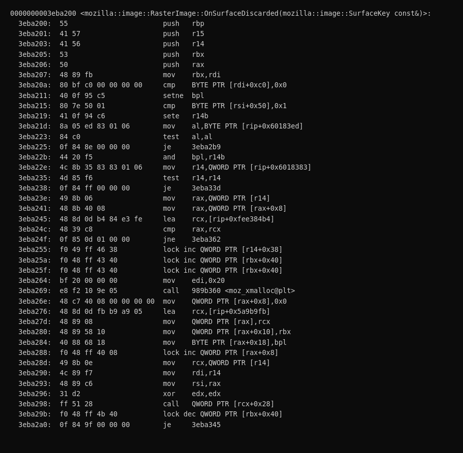

Use-after-free in RasterImage surface discard
Firefox stores decoded image surfaces in a SurfaceCache keyed by a raw, non-owning pointer to the owning image, and notifies that image when a surface is discarded.
Abdulaziz Alasaiqah
CVE-2026-74943 · RESOLVED FIXED
Vendor
Mozilla Firefox
Component
Core / Graphics: ImageLib
Class
Use-After-Free
CWE
416
CVSS
9.8 Critical (NVD); sec-high (Mozilla internal)
Fixed in
Firefox 154, ESR 115.39, ESR 140.14, ESR 153.1; Thunderbird 154, 140.14, 153.1
Interaction
None, page load only
Summary
Firefox stores decoded image surfaces in a SurfaceCache keyed by a raw, non-owning pointer to the owning image, and notifies that image when a surface is discarded. The notification ran on a decoder thread and took a strong reference with RefPtr<RasterImage> image = this after only checking an mIsBeingDestroyed flag. Ordinary web content can drive surface eviction while the image is being released on the main thread, so the check and the AddRef could straddle the moment the reference count reached zero, resurrecting an object whose destructor had already begun and later reading freed memory.
Root cause
SurfaceCacheImpl::Remove calls OnSurfaceDiscarded through a raw ImageKey while holding the SurfaceCache mutex. If the main thread drops the image's last reference at that instant, Release takes the count to zero and the destructor blocks on the same mutex. The decoder thread then performs the AddRef after zero and queues a runnable. Once the destructor finishes and frees the 248-byte RasterImage, the runnable reads freed storage at mProgressTracker. The mIsBeingDestroyed flag from an earlier fix narrows the window but cannot close it, because reading a flag and then AddRef-ing are two separate operations against a lock-free reference count.
image/SurfaceCache.h defines ImageKey as ImageResource*, a non-owning raw pointer. The cache's own documentation requires an image to remove its entries before it is destroyed, precisely because holding that pointer past destruction is unsafe. Cache pressure reaches SurfaceCacheImpl::Remove from two paths, the insertion loop when a new surface evicts an old one, and the expiration timer. Remove reads the raw key and calls static_cast<Image*>(imageKey)->OnSurfaceDiscarded(...) while the global SurfaceCache mutex is held. Nothing on that call path owns the Image; the mutex protects the cache's own bookkeeping, not the object the raw pointer refers to.
Inside OnSurfaceDiscarded, RasterImage tests mIsBeingDestroyed, an Atomic<bool>, and only after unrelated bookkeeping constructs RefPtr<RasterImage> image = this. That raw-pointer RefPtr constructor is the first line in the callback that actually takes a lifetime-bearing reference, and it runs strictly after the destruction check, not as part of it. Meanwhile RasterImage::Release, the generated thread-safe refcount decrement, can reach zero on the main thread during ordinary document or frame-loader teardown. When it does, the destructor sets mIsBeingDestroyed and calls SurfaceCache::RemoveImage, which itself blocks trying to acquire the same static mutex the decoder thread is already holding. The flag exists, but a thread can read false, get preempted or simply lose the scheduling race, and only then perform the AddRef after the object's refcount has already gone through zero. A boolean flag and a reference-count increment are two separate machine operations; nothing makes them atomic with respect to each other.
The runnable that gets queued from that resurrected RefPtr later runs on the main thread and calls OnSurfaceDiscardedInternal, which reads mProgressTracker off the object at offset eight. By then the destructor has finished and jemalloc has returned the 248-byte block to its free list. This is the exact read ASAN flags, RefPtr::operator bool() at RefPtr.h:337, called from OnSurfaceDiscardedInternal at RasterImage.cpp:518.
| Step | Location | What happens |
|---|---|---|
| 1 | SurfaceCache.cpp:837-843, 1525-1528 | Surface eviction or expiration calls SurfaceCacheImpl::Remove, cache mutex held. |
| 2 | SurfaceCache.cpp:898-907 | Remove reads the raw ImageKey and calls OnSurfaceDiscarded on it directly, no ownership taken. |
| 3 | RasterImage.cpp:489-491 | OnSurfaceDiscarded observes mIsBeingDestroyed == false. |
| 4 | RasterImage.cpp:59 | Concurrently on the main thread, Release() drives the real refcount 1 to 0. |
| 5 | RasterImage.cpp:78-88; SurfaceCache.cpp:1799-1805 | The destructor starts, sets the flag, and calls RemoveImage, which blocks trying to take the same cache mutex the decoder thread already holds. |
| 6 | RasterImage.cpp:498, RefPtr.h:105-107 | Still holding the cache mutex, the decoder thread constructs RefPtr<RasterImage> image = this, AddRef-ing an object whose refcount already passed zero, and queues a runnable. |
| 7 | RasterImage.cpp:88-90 | The callback returns, the cache mutex is released, the destructor resumes and frees the 248-byte allocation. |
| 8 | RasterImage.cpp:518, RefPtr.h:337 | The queued runnable runs on the main thread and reads mProgressTracker on freed storage. ASAN flags the read here. |

Proof of concept
- A web page creates SurfaceCache pressure with many discardable surfaces across cross-site frames while releasing the frame that owns the image requests. No click, permission, extension, or pref change is required.
- The surface-discard notification on the decoder thread and the image's final release on the main thread interleave, resurrecting the dying RasterImage.
- The queued runnable later runs on the main thread and reads the freed object.
// Condensed excerpt, matches the full real ASAN capture below
AddressSanitizer: heap-use-after-free
READ of size 8, 8 bytes into a freed 248-byte RasterImage
use : RasterImage::OnSurfaceDiscardedInternal (main thread)
freed : RasterImage::Release() via imgRequest teardown
alloc : ImageFactory::CreateRasterImage() on the ImageIO threadTools
- objdump over libxul from Firefox 140.9.0esr, with the function laid out from the official Mozilla Breakpad symbol-server data since the symbol is stripped from release builds, to illustrate the flag check and the separate non-atomic AddRef.
- A canvas-only HTML race driver (trigger.html) that fills and evicts the surface cache while tearing down the owning DOM subtree, using only synthetic images.
- An ASAN Firefox build to turn the intermittent crash into a clean heap-use-after-free report, plus Marionette to drive and capture the harness.
Impact
A heap use-after-free in the content process, reachable from an ordinary web page with no user interaction. NVD assigned it CVSS 9.8, Critical. Mozilla's own triage rated it sec-high; asked directly whether sec-critical applied instead, Mozilla confirmed that rating is reserved for a narrower set of circumstances this bug did not meet. Escalation to controlled code execution was directly tested, not just left untried, and was not achieved on the builds tested; see Exploitation analysis below for the experiments and the specific allocator-level reason. The object is resurrected and its freed memory is read.
Exploitation analysis
Whether the freed slot can actually be reclaimed with attacker-chosen bytes is a real question, but it cannot be answered on the ASAN build used to capture the crash above. AddressSanitizer replaces the allocator entirely and quarantines freed memory specifically so bugs like this one get caught before reuse, which makes it the wrong allocator to study reclamation against. Answering it required a separate, purpose-built, non-ASAN optimized build from mozilla-central tip (155.0a1, revision 9f4db3078551), instrumented to log the discard callback, the RasterImage destructor, and the freed object's contents at read time, with the check-to-AddRef window widened to make the race deterministic enough to study. That build reproduced the same interleaving and the same use-after-free: the queued runnable read mProgressTracker as 0xe5e5e5e5e5e5e5e5, mozjemalloc's own free-poison pattern, confirming the read lands on memory nobody had touched since the free.
Reclaiming that slot with attacker content was then attempted directly, across more than twenty separate experiments spraying every web-content-controlled allocation primitive that could plausibly land near a 240-byte allocation: ArrayBuffers and typed arrays, JS strings, arrays, DOM attribute and text content, Blobs, Headers, FormData, URLSearchParams, and CSS custom properties, in volumes of 100,000 to 120,000 objects per run. None of it worked. Instrumenting the allocator directly showed why: these sprays added roughly zero allocations to the specific 240-byte arena RasterImage actually lives in, against a baseline of about 7,700, where a working reclamation primitive would add on the order of 100,000.
The reason is structural, not a gap in the search. mozjemalloc assigns arenas per thread, and every UAF-triggering RasterImage was allocated on a decoder or ImageIO thread, so it frees back into that thread's arena. SpiderMonkey, by design, routes all of its off-heap data into dedicated arenas of its own, ArrayBuffer and typed array contents into a private ArrayBufferContentsArena, string characters into a private StringBufferArena, regardless of which thread runs the JavaScript. The content main thread is separately pinned to its own private arena for ordinary Gecko allocations. Between those two facts, no JavaScript-heap value, on any thread, can ever occupy the specific arena a freed RasterImage returns to. The remaining content-controlled allocations that do land in the correct arena were checked individually and each fails a different constraint: a raw image byte buffer is far too large a size class, decoded pixel data lives in shared memory rather than this heap at all, and spraying same-type RasterImage objects is not content-controlled the way an attacker would need and floods the surface cache badly enough to starve the very race it is trying to win.
To check whether arena isolation was the only barrier, a further build patched ArrayBuffer data to route into the default arena and sprayed from Web Workers, which do use that arena, and separately disabled the main thread's private arena entirely so ordinary page JavaScript would share it too. Both still failed, and the reason is the more interesting result: forcing the arenas to align enough to make reclamation possible perturbs the timing enough to suppress the very race that produces the bug. A spawned worker alone dropped observed discard windows from roughly 7,700 to about 70 per run; disabling the main thread's private arena introduced lock contention with the same effect; driving same-type image reclamation by loading more images produced 24,365 discard windows and zero aligned frees. The race and the reclaim compete for the same narrow timing budget, and every mechanism tried to win the reclaim lost the race instead.
None of this changes what controlling the slot would be worth, only that it was not achieved from web content on the builds tested. mProgressTracker sits at offset 8 of the freed object; if it held an attacker pointer, OnSurfaceDiscardedInternal calls mProgressTracker->OnDiscard(), which reads an observer table through a forged CopyOnWriteValue pointer and, for each entry, calls NotificationsDeferred() and Notify() through the object's vtable, the first attacker-influenced indirect call in the chain. Reaching that would still require a second, independent primitive this bug does not provide, attacker-known addresses to point a forged object graph at, since the freed read is never returned to script and leaks nothing on its own. This is a static reading of the code path, not a demonstrated exploit: the arena and timing barriers above are what stop it from being reached from web content at all, on every configuration tested, including ones with the relevant protections deliberately removed. This is also exactly the tension NVD's CVSS 9.8 and Mozilla's own sec-high rating both capture correctly: the bug class is critical-severity by nature, reachable with no interaction and no privilege, but this specific build's allocator design is what keeps the demonstrated result at an unauthenticated crash rather than a controlled primitive.
Fix
OnSurfaceDiscarded no longer references the image directly. It captures a strong reference to the separately refcounted ProgressTracker and recovers the image on the main thread through the tracker's weak back-reference, promoted to a strong RefPtr under the tracker's own mutex rather than the racing raw-pointer AddRef this bug relied on. The obsolete mIsBeingDestroyed flag is removed.
// condensed to the essential lifetime logic, not the literal shipped patch,
// which wraps this in a dispatched runnable closure
RefPtr<ProgressTracker> progressTracker = mProgressTracker;
// on the main thread:
RefPtr<Image> image = progressTracker->GetImage();
if (!image) return; // destruction already committed